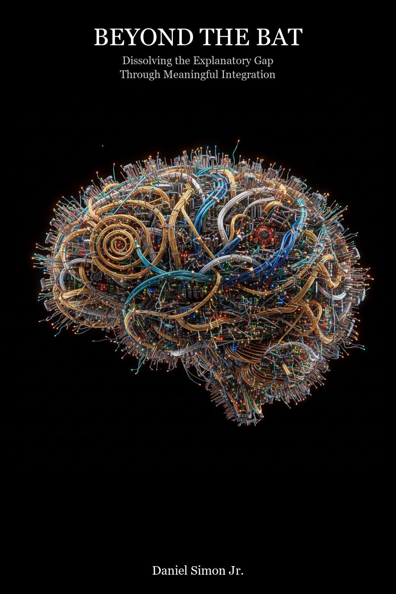

The full paper with rendered mathematical equations, all 11 sections, and 8 appendixes (A–H). Opens in your browser.
HTML + SVG MathExplore the RSP theory across 20 interactive tabs: architecture diagrams, theory comparisons, clinical evidence, and a live simulation.
20 Tabs + Live SimulationPrint-ready PDF with cover, all equations rendered, 8 appendixes (A–H), 3 figures, and index.
~5 MB · 196 PagesLaTeX source for Algorithm 1: the RSP consciousness generation loop with subroutines and phylogenetic variation table.
LaTeX · MIT LicenseVideo walkthrough of the RSP model, explaining the three-level architecture and its implications for consciousness.
MP4 · NotebookLMVisual poster summarizing the RSP framework, key arguments, and empirical predictions.
PDF · NotebookLMInteroceptive monitoring produces valence (good/bad) and arousal (calm/activated). Conserved across vertebrates since ~450 Mya.
Five foundational schemas (body, spatial, affective-homeostatic, attention, self) organize raw affect into structured experience.
3a: Conceptual categorization (culturally learned emotion categories). 3b: The "strange loop" — social prediction machinery redirected at the self, constituting phenomenal consciousness.
Why the Persona Selection Model Needs a Theory of Consciousness — A response to Anthropic's PSM paper (Marks, Lindsey & Olah, 2026). RSP provides the theoretical foundation explaining why persona simulation produces human-like AI behavior.